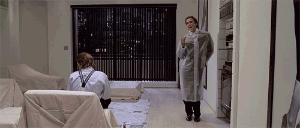

CAPÍTULO 1:
«Aquel hombre que se cuestiona la posible existencia
de Dios en el momento exacto de su muerte...
¡Suele morir!»
Sam Shimata — Axiomas Nihilistas I
✦
CAPÍTULO 1
Desde las 7:30 de la mañana que estoy despierto, y sin embargo sigo sin encontrarme a mí mismo.
Afortunadamente hoy —28 de mayo de 2118— es sábado, por lo que puedo darme el lujo de pasarme en mi ataúd por horas. Las conversaciones vagas de mis vecinos, junto al ajetreado pasar de los coches, se dejaban notar a primeras horas de la mañana, como si compitieran por quién me provoca primero.
Mi habitación era espaciosa pero sin alma alguna. «Qué puto asco, Dios mío», me quejo al poco de despertar. Ropas de todo tipo, ya sea sucia o limpia esparcidas por el suelo en demasía. El porqué dan asco, es por el «crack» que ruge de sus cuerpos al pisarlos. Al fondo de la habitación, sobre una silla, divisé algo que hizo que me cagara encima: poseía dientes afilados como una fiera, músculos supertensos, como si cargara un ataque. «¡Quién anda ahí! Qué coño quieres de mí, váyase, tome mis pertenencias. No me hieras. Un ¡zas! de la nada y se acabó para ti, eh».
No obstante, me acostumbré a vivir entre tanta carroña, en un escenario ambientado en las novelas de Anne Rice (Descripción dada por Exypra, mi mejor amiga).
Oh, qué haría yo sin mi querida Exy.
Al mismo tiempo, los primeros rayos de sol ya te decían buenos días pero no del todo, bueno… yo ya estaba despierto desde hace rato por el charcal que se dibujaba en mis sábanas (¡Putos 37 grados a las siete de la mañana!)
Bueno… antes de apresurarme en la narración de los eventos, proseguiré con el presente: «La guerra entre Ucrania y Rusia continúa…»; «Última noticia, 82 personas perdieron la vida ayer en Ronda, Lleida. Los Mossos D’Esquadra confirmaron que se trata de un crimen de odio…»
«Joder… —me quejé—. ¿Por qué tiene que pasar esto? Parecía buen tipo.» Si ignoramos, claro está, sus convicciones políticas. Y más que pasar desapercibido, uno si lo observaba más de cerca, se daría cuenta de su verdadera naturaleza.
Aparte de eso, nada interesante sucedió en las primeras horas de la mañana.
Ya llegadas las diez, me encontraba en mi balcón. Entusiasmado en una parte por la pronta llegada de Exypra, la cual se encontraba en el pórtico;por otra parte, repugnado por la cantidad de gentes que hoy en día pisan estos barrios. Siempre que los observo, ya sea desde el balcón o desde la ventana de mi cuarto, no puedo parar de preguntarme si acaso poseen emociones o problemas. Quiero que sean humanos, no unos fascistas de mierda. Con razón… ¿acaso encontrarse a uno mismo es a partir de la ideología?
«Eres muy joven para esos temas políticos, Kamada» solía decir mi abuelo. Bueno… Creo que Adolf Hitler dijo algo similar en su famoso libro, ¿no?
¿Por qué hizo eso? ¿Es necesario matar a los demás con tal de encontrarse a sí mismo?
La ideología es un escape de la realidad… se podría argumentar que todo es un escape de la realidad.
—Cada día este piso está más sucio.
Sonrió a la vez que se quitaba la blusa. El sudor le caía por sus negras mejillas.
—¿Qué tal estás? ¿Bien? Supongo que un poco triste por lo de ayer… ¿Fue ayer? —Dejó la brusa sobre la terraza, jugando con la persiana—. Deberías comprarte un asistente Humana para que te ayude con la limpieza… créeme, te será muy útil.
Tras eso tomó una bocanada de aire. No pude contenerme la risa; amaba estar ante su presencia, su forma de expresarse, todo de ella…
—Pues tirando… no sé.
No obstante, su presencia siempre me hacía reflexionar: ¿qué es lo que tanta curiosidad le causa de este vertedero inhabitable? Ya sabes cómo decían: “El que se junta con mierda después se mancha.”
—¿De qué te ríes?
—De nada.
—¿Seguro?
En la tele echaban el noticiario, y de nuevo la imagen del vagabundo se me vino a la mente. Cambié de canal lo más rápido que pude, ahora el rostro sereno de Jacinta se ocultaba bajo los hombros de un fornido mozo. «Dile a Anna que te dé uno. Te puedo conseguir la “2” por unas cuantas pelas, siempre y cuando me des tu nombre de usuario y contra.» Se levantó, colocando los papeles polvorientos sobre una cesta, y cuando regresó del lavabo:
—Y qué, ¿mamá te llama?
—Qué va.
—Deberías hacer el favor de comunicarte con ella, al menos. Me llama siempre, diciendo que te pase el teléfono, pero nunca respondes. A ver si te dejas ver en una video llamada... Se preocupa por ti de veras.
—Ya sé, siempre me dices lo mismo —repliqué—. Ya la llamaré luego.
—No veas qué sucio tienes el comedor. Huy, si tu madre te viera así, la que nos cae, Kam. Me dijo que llega el mes que viene. Tú sabrás más que yo, no sé.
Nos tumbamos sobre el sofá cama. Me di cuenta de que portaba una camiseta de Las Casas, de su álbum Histeria Colectiva, EP Desde el Subsuelo.
—Qué va, me dijo que viene de aquí 2 meses, por agosto aproximadamente.
—Pues veré lo que puedo hacer. Un día de estos, me presento por aquí y te la lío. —Se rio, mostrando sus rosadas encías—. Ya verás, te despertaré a las siete a fregar el pasillo. Que soy capaz, eh.
Se secó el sudor que le perlaba la frente y subió el volumen, atenta a la confesión de amor de la protagonista. De la nada, incomodado por la escena de romance se me vino a la mente Fabi.
—¿Y qué tal con tu novio? —pregunté como pa’ cambiar de tema.
—Huy, ¿Fabi? ¿Ese fill de puta…? —Cambió accidentalmente de canal. Era incapaz de mantener sus manos quietas.
—¿Hijo de qué?
Típica pareja de instituto que a primeras parece que no van a durar ni dos días, pero que la relación se alarga más que un chicle.
—Sí… fill de puta es loque es. Su madre, una tacaña.
—¿Y dónde está?
—Pues de vacaciones junto a sus padres y su hermana pequeña en una villa alquilada. Me dijo que se quedaba, mecachis en la mar… Y yo que quería ver a su hermanita.
—Ni me enteré de que Fabi tenía hermana.
—Ni te enteras de na’ tú, eh —decía Exypra—. ¿Cómo vas a enterarte, si no sales de casa?
Seguidamente volvió al drama barato de Jimena, y viéndola de perfil se me hacía difícil no compararla con ella.
«Lo siento Exy —decía Fabián—, pero ya sabes… La mala vibra que hay entre mi madre y tú. —Se echó los pelos para atrás mientras se le acercaba—. Quizás es mejor que te quedes en Lleida…» Me los imaginaba con un chófer a punto de arrancar el motor, en las afueras de Ciutat Jardí, Exy se ve a sí misma a través de las gafas de la hermanita «¿no vienes?», preguntaba esta al borde del llanto.
Escuché sus divagaciones acerca del examen que casi le suspende Sam, que si Fabián supuestamente le era infiel, que si nunca quedaban juntos, que si le trataba mal, que si sus padres son muy estrictos…
—Quizá ya se encontró a otra novia —comencé—. No estoy metido en vuestra relación, pero la manera en la que te trata últimamente no me deja otra.
Añadí un: «no sé, igual…»
—Ah —gruñó echándose las manos en el rostro—. Tal vez tengas razón. Tan solo soy una más. Si vieras cómo las muchachas lo miran, me da vergüenza salir con él a la calle, es como si me tuviera que poner a su altura…
—No digas eso, vamos, mujer —traté de consolarla.
—Lo guapo que es —decía—, rubio como él solo. Cuando me trata bien, de veras que me hace reír. Solíamos dar vueltas por la Calle Mayor y ahí me compraba cosas de vez en cuando. Pero a su madre no le gusto, no sé por qué.
—Tranquila, oye, ¿te preparo algo?
Vertí el agua que sobraba de la tetera, y vine con un vaso de té. Bufó encima del humo imaginario mientras su mirada se perdía en las plantas muertas de aloe vera de la terraza. Le dije si quería algo de picar; hay ensaimadas y un poco de chocolate, ¿quieres? Pero de ahí no despegó la mirada, hasta que un estruendo de la tele la despertó.
—¿Apruebas? —preguntaba Exypra de la nada—. Supongo que sí, ¿no? Siempre fuiste de los mejores de tu clase.
—Tirando, ¿y tú?
—Pues casi me queda Literatura. No veas la que mi madre casi me monta… si no fuera por Akara, la bronca que me pegaba.
Se me vino a la mente Akara. A ojos míos se me hacían superinseparables, pero, al mismo tiempo, tan diferentes. Se me hacía que ambas no eran hermanas, sino que tenían que compartir el mismo techo por obligación. Y mientras Exypra era de piel oscura, la otra era más pálida que la nieve. Era de esas cosas que te hacían cuestionar si de verdad eran hermanas.
—Sam es de esos que te ponen cosas en los exámenes que no salen ni en el curso.
—Ya ves. O peor es Carmen. ¿La tienes en mates? Te pone preguntas to difíciles, y tú que vas ahí habiéndote empollado todo, para que al final salgan ejercicios que nada que ver…
—Nos hacen la vida imposible los profes —dije.
Exypra meneó la cabeza, cerró los ojos, evocando quizá algún recuerdo. Hice lo mismo, quería sentir lo mismo que ella. Más bien con el silencio quería volver a ser lo que éramos antes; esos dos niños que jugaban alegremente al pilla-pilla. Recuerdo que cuando la pillaba, después de esconderse en el sitio más profundo de la historia, esta lo negaba y decía no juego. No obstante, una vez abiertos los ojos, me encontré con una escena que me paró el corazón: Exypra se puso encima de mí.
Siendo honesto, lo único que recuerdo eran los gemidos de Jacinta, y a mi amiga soltándome todo tipo de insultos; no sabía cómo defenderme.
—Cállate —me gritó.
—¿Por qué?
—No sabes cuánto odio que me traten como víctima. —Se levantó bruscamente, no sin antes haber empapado mi cara de saliva—. Vine a este vertedero humano para ver cómo te encontrabas, para que al final saques lo de mi novio. Vaya hijoputa, eh.
Mierda.
Tras eso ella volvió a su sitio. Pude oír su respiración entrecortada, al igual que la mía, mientras que los restos de su calor seguían en mi pecho. El tiempo no parecía avanzar. Traté de cruzarme con su mirada pero ella se iba de nuevo hacia la planta. Un pájaro devoraba los restos del tajo. «Sí, ya puedes ir meditando, ya», dijo. Y tal como vino, cogió su blusa, dio un portazo y desapareció camino a Balafia.
Me hubiera gustado disculparme con ella. Ahora lo único que me quedaba era su fragancia. Me senté de espaldas a la puerta por lo que aún podía oír cómo se iba alejando. Al mismo tiempo, su esencia se encontraba en mi camiseta, no había desaparecido. «Seguro que vuelve», me dije, regañándome de nuevo por no ordenar mi cuarto correctamente. No obstante, en el fondo sabía que eso no iba a ocurrir. Me emocioné cuando el sensor del pasillo se encendió. Se debió de olvidar algo. Así que rápidamente volví al salón, quería sorprenderla y disculparme, pero era el perro del vecino que ascendía hasta el tercero.
Recomendaciones de la Hoya

American Psycho
2000
Clásico de clásicos. Recomendado para aquellos faltos de un poco de nihilismo-corporativo-consumista. Lo que más me gusta son los monólogos de Patrick Bateman y lo memeable q es. Diría que junto a Homelander, es de los personajes con más memes. Me parece que el mensaje de la peli está muy claro, sobre todo en la escena final.